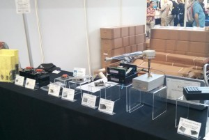

http://www.hamradio-friedrichshafen.com/ham-en/index.php

Friedrichshafen HAM Radio Exhibition
This was my first ever visit to the HAM Radio and Maker World Exhibition at Friedrichshafen (I think was their 39th year). They were joined this year for the first time by the Maker World exhibition which was also very interesting.
You can’t really appreciate the size of the hall from this picture!
In case you don’t know, this is the biggest amateur radio exhibition in the world – there were three very large halls for the HAM radio, and one for the Maker World exhibition.
Here’s a few pictures of the HAM radio exhibition. This doesn’t really do it justice, but there are plenty of other people that have covered this in previous years (e.g. try searching for “ham radio friedrichshafen” in google images).
Every radio manufacturer had a stand in the main hall, this is a couple of the stands:
.
There was also a lot of second hand equipment and components available in the flea market:


This included some very old and ex-military equipment.
The Maker World exhibition was in hall A5, and seemed to be quite heavily dominated by 3D printers:


And objects that could be made with these printers:

There was also a company that would make a mini model of you (I think like they did on the TV show the Big Bang Theory):
Various robots that could do things like following lines and playing football (quite badly ;)) and a computerised version of the Rubics Cube:

And then there was a whole stand where they had “Pimp my Computer” type cases:

(None of these would fit on my desk – but maybe I’m missing the point!)
There was also some sort of musical instrument that you could wave your hand at to play each note. Unfortunately this was next to the Tesla coil, which kept setting it off!

{kind=link}
{kind=link}
{kind=link}
{kind=link}
{kind=link}
{kind=link}
{kind=link}
{kind=link}
{kind=link}
{kind=link}
{kind=link}
{kind=link}
{kind=link}
{kind=link}